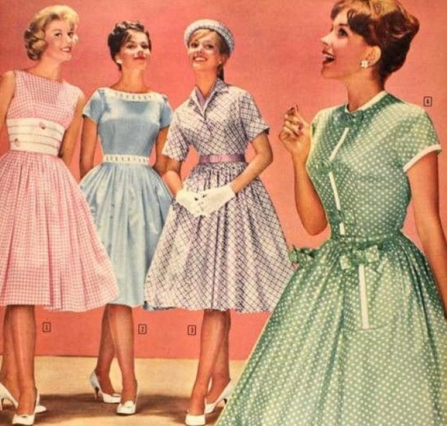

Os topetes são outra opção que está voltando, ele pode ser usado com os cabelos soltos, mas ficam
ótimos quando combinados com rabos de cavalo. Separe as mechas mais da frente da cabeça antes de
fazer o rabo de cavalo, depois use grampos para deixar essa mecha mais alta que o resto do cabelo.
Looks esportivos nos anos 80 eram bem variados de acordo com a classe economica e o pais, mas sempre
bem coloridos, alem de tudo esse estilo já está voltandoa moda atual
Era o começo do século. Diversas celebridades estavam lançando novas músicas, sendo conhecidas por
seus jeitos ousados e extravagantes. A moda não podia ficar à espreita. O resultado foi seguir a
onda e chamar a atenção. Peças curtas, de cintura baixa, acessórios coloridos… o fato é que os looks
anos 2000 eram muito criativos.
outro estilo dos anos 2000 que fez muito sucesso, e principalmente entre homens pretos, esta
voltando, nesse estilo contém muitas referências ao basquete.

Se a década de1940 expôs o mundo a um período de enormes dificuldades em razão da Segunda Guerra
Mundial, nos anos 1950 o cenário se altera radicalmente. Os tempos sombrios da guerra e a vida
prática e funcional (e aí se inclui a moda), ficam para trás.
Nesse contexto, a moda renasce, e o resgate do cuidado com a aparência também. O glamour e a
feminilidade ressurgem, a oferta de tecidos é retomada. A elegância está de volta e um novo e
glorioso momento fashion tem início.
Vamos viajar no tempo para falar sobre a moda dos anos 50. Que roupas os homens usavam para
trabalhar ou nas horas vagas? Que estilo estava na moda entre os jovens?
Descubra como eram as roupas dos anos 1950, tanto formal quanto informal, bem como sua enorme
influência em muitas das roupas que vestimos hoje.
A série da Netflix “Bridgerton” serve tudo isso ao telespectador, e já ganhou o título de seriado
original mais visto da história da plataforma. A produção é baseada na série de livros de mesmo nome
escrita por Julia Quinn e produzida por Shonda Rhimes.
A história da moda masculina pode não parecer tão importante em comparação com a feminina, porém
quem pensa desse jeito está muito errado! Muito antes das mulheres, os homens usavam perucas,
maquiagens e até saltos.